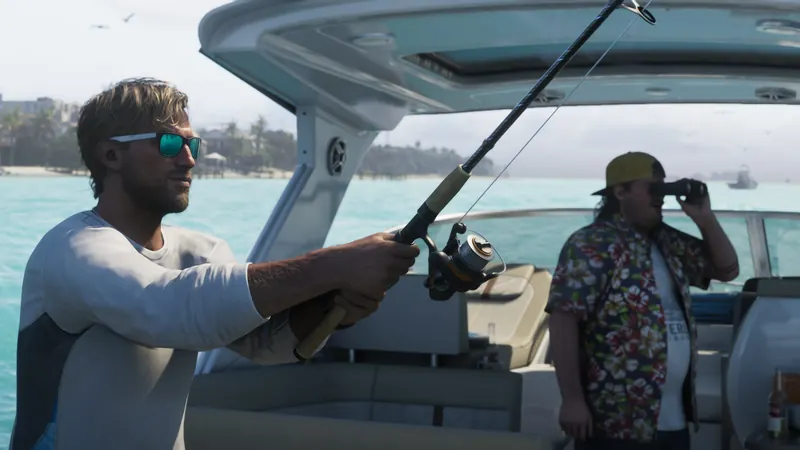

¿Cuáles son las misiones de GTA 6? Lista por capítulos y perdibles
Respuesta corta
La historia tiene un Prólogo y cinco capítulos. GTABase numera 122 misiones contando las opcionales; 27 son del Capítulo 1, entre ellas «Día de pesca» y «¡Oye, Arnold!». Cuatro misiones opcionales se pueden perder: dos del Capítulo 1, una del 3 y otra del 4.

Prólogo
Según Vandal, el Prólogo consta de una única misión, que se llama igual que el capítulo.
Capítulo 1
Las misiones que enumera la guía de Vandal (solo títulos, sin detalles de la trama):
- Día de pesca
- Equípate
- Es solo un rasguño
- Costes de laboratorio
- Fontanería
- Atención no deseada
- Consigue el ron de Shirley (opcional)
- Roba la scooter (opcional)
- ¡Oye, Arnold!
GTABase, en inglés, sigue un orden algo distinto y añade más misiones del capítulo, como «Island Dreams». Las guías aún no coinciden en el orden exacto, así que no lo damos por cerrado.
Cuáles se pueden perder
GTABase marca como opcionales y perdibles «Get Shirley's Rum» y «Steal the Scooter», que corresponden a «Consigue el ron de Shirley» y «Roba la scooter». Vandal también avisa de que su guía señala el contenido que se puede perder. Como no se pueden repetir misiones, conviene guardar antes: mira cómo se guarda la partida.
Capítulos 2 a 5
Contiene títulos de misiones de capítulos posteriores. Despliega cada capítulo solo si quieres verlos.
Lista de GTABase, que pone nombre a cada capítulo y marca como perdibles otras dos misiones opcionales: «Raul's Next Job» (capítulo 3) y «Child's Play» (capítulo 4). Los títulos están en inglés; en la versión en español pueden cambiar.
Capítulo 2: Paradise Lost (18 misiones)
- What's in the Bag?
- Ambulance Chaser
- Play Nurse
- Overnight Charges
- Just Moved In
- Girls' Trip (opcional)
- Moses
- New Look
- How Do I Look?
- Got Pills?
- Daily Driver
- Behind on Payments
- Slam Dunk
- Breakfast Run
- Coffee Break (opcional)
- Prepare for Vice City
- Afternoon Delight
- Checking Out
Capítulo 3: Tits Ass Drug Money (31 misiones)
- Welcome to Vice City
- Dealer's Choice
- Meet the Heders
- Dubious Provenance
- Mami Knows Best (opcional)
- South Leonida Real Estate
- Tyrone
- Here, Kitty Kitty
- Send Money to Lorena
- Encrypted Hard Drive
- Car Service
- Send More Money to Lorena
- Top Billing
- Boobie Time (opcional)
- First Impressions
- Caught Slipping
- Crosstown Traffic
- Credit Check
- Steal the Zorrusso for Randy
- Raul's Next Job (opcional, perdible)
- Sinfrontera National Bank
- Security Expert
- Heist Planning
- Ride or Die
- Company Property
- The Missing Link
- Safe Word
- Cooties
- Bricked Up
- Hidden Charges
- The Cartel Heist
Capítulo 4: Vice City, Baby (35 misiones)
- Ocean Beach
- Another Life
- Pool Day
- Company Cars
- Lawyer Up
- It's a Date!
- Party Hard
- Heavy Lifting
- Pay Abe's Fee
- Photo/Shoot (opcional)
- Making Gainz
- Blood Sweat and Gear
- Watch It
- Call Nate
- Cash Injections
- Amateur Hour
- Dirty Work
- Nate Will Be in Touch
- Too Much Baggage
- Adventures in Babysitting
- Rafa
- Fresh Evidence
- Power Play
- Child's Play (opcional, perdible)
- Headliners
- Close Surveillance
- Delivery Method
- Team Building
- Fully Catered
- Heist Plans in Place
- VCIA Takedown
- Tie Up Loose Ends (opcional)
- Call Valentina Back
- Sunset
- Starting From Zero
Capítulo 5: Top of the World, Ma (10 misiones)
- Bird in the Hand
- Taking Liberties
- VC Baby
- Doggie Bag
- Operation Savage Glory
- Honest Abe
- Unfinished Business
- Pay Abe's Fee
- Protective Custody
- The End of the Road
Fuentes
- Vandal: historia y misiones en GTA 6 al 100 % (19-11-2026)
- Vandal: todas las misiones del Prólogo y cómo completarlas (19-11-2026)
- GTABase: guía de misiones de la historia de GTA 6
Resumen redactado por 6 Estrellas a partir de las fuentes citadas, revisadas el 20 de noviembre de 2026. Si ves un error, cuéntanoslo desde Quiénes somos.